App Walkthrough — Visual Presentation¶
A complete visual tour of the NFC-AI Smart Shopping Assistant, from first launch to daily use.
1. Splash Screen¶
The app opens with a branded splash screen featuring the app name and a brief loading animation.
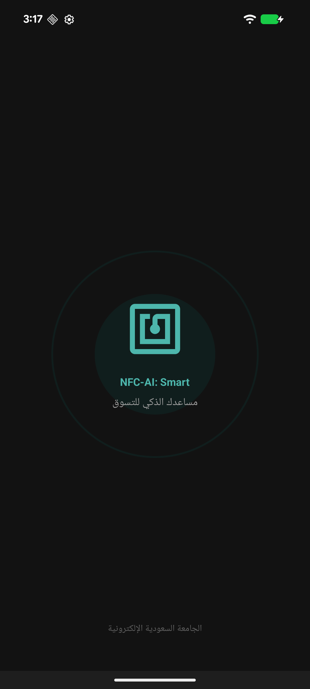
2. Welcome & Onboarding¶
First-time users set up their language preference and dietary profile (allergies, restrictions). This information drives the AI safety system — the app will never recommend products that conflict with these settings.
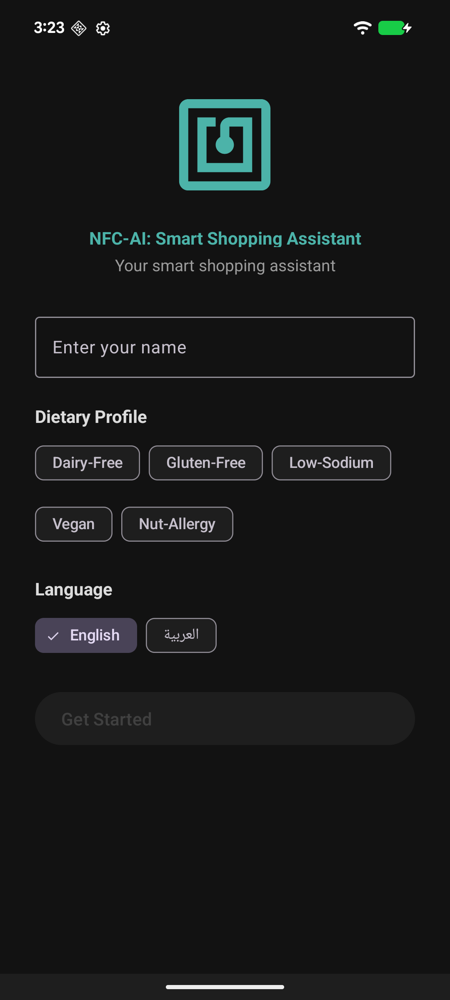
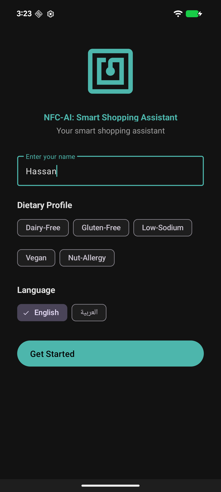
3. Home Screen & Interactive Tutorial¶
On first visit, an interactive spotlight tutorial guides users through every feature. The tutorial blocks navigation until completed, ensuring users understand the interface.
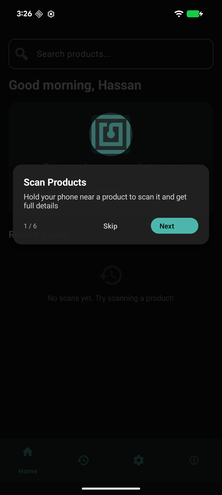
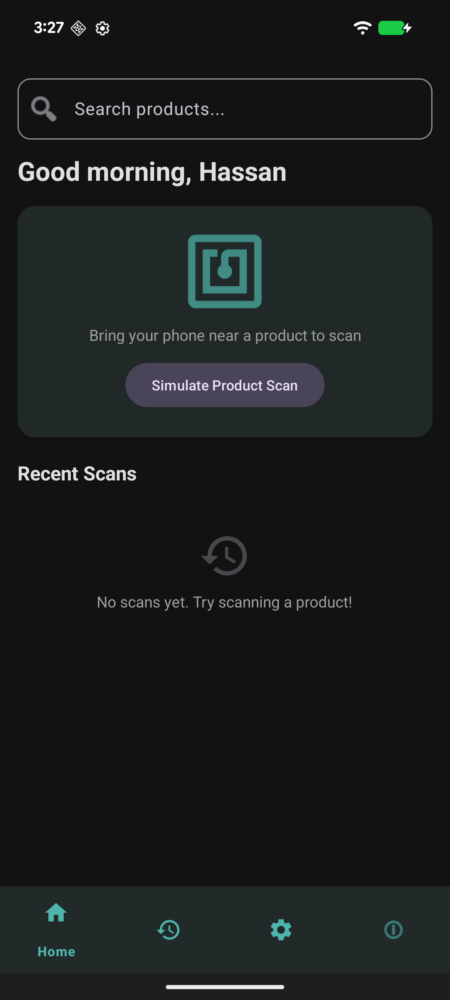
4. NFC Scanning & Product Detail¶
Users tap their phone on a product's NFC tag. The app instantly looks up the product and displays full details: nutrition facts, ingredients, and allergen warnings matched to the user's profile.
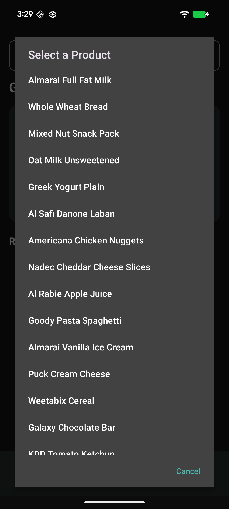
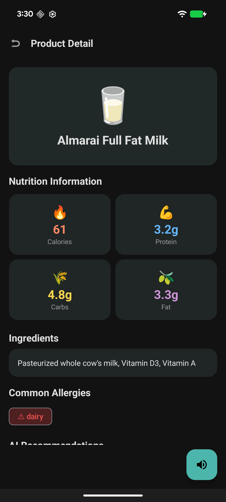
5. AI-Powered Recommendations¶
The AI analyzes the scanned product against the user's dietary profile and suggests 3 safe alternatives with match percentages, reasons, and full nutrition data. A multi-layer safety pipeline ensures no dangerous suggestions (e.g., no almond milk for nut allergies).
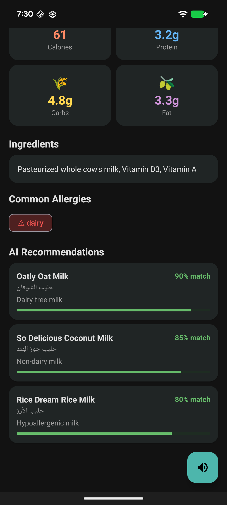
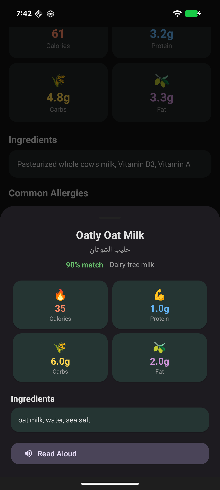
6. Scan History¶
Every scan is logged with timestamps. Users can filter by date and clear history. The history tutorial highlights key features on first visit.
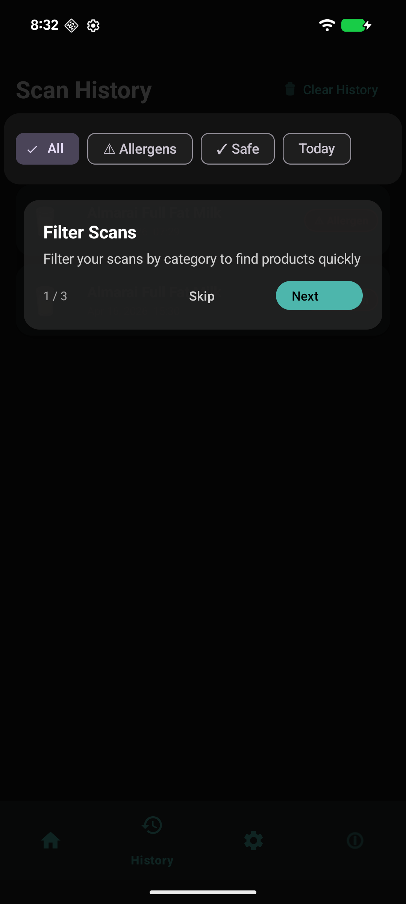
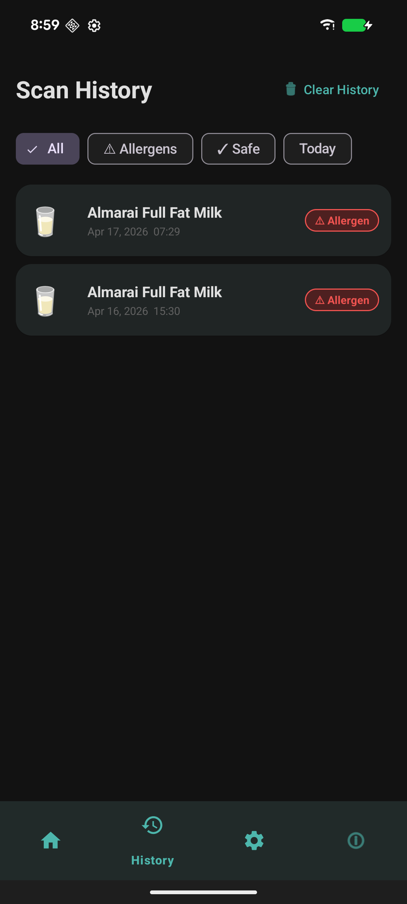
7. Settings & Accessibility¶
Comprehensive settings for theme (System/Light/Dark), font size (Small/Medium/Large), TTS speed (x0.5/x1/x1.5), dietary profile editing, and accessibility options including auto text-to-speech.
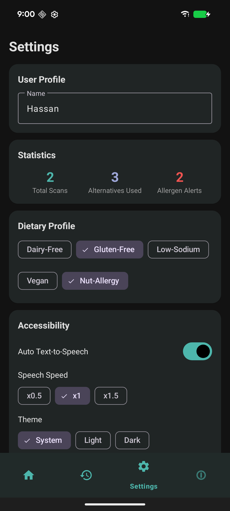
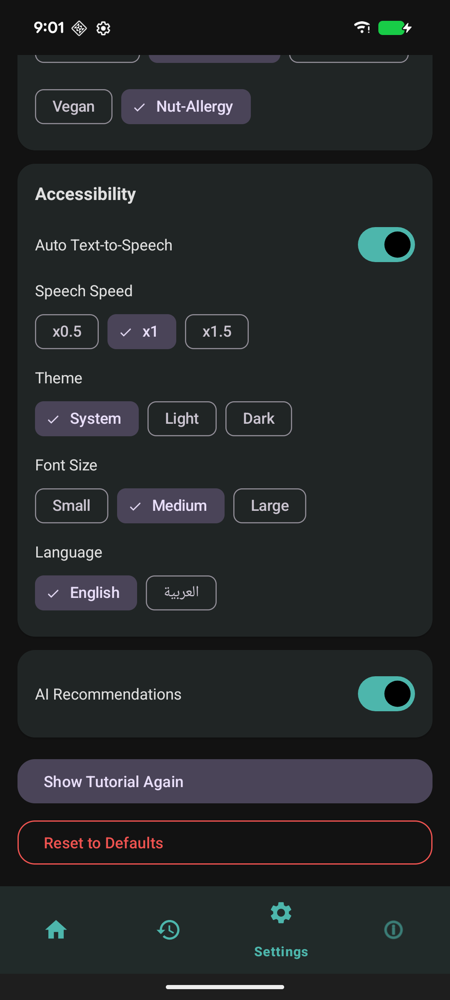
8. About & Home with Scans¶
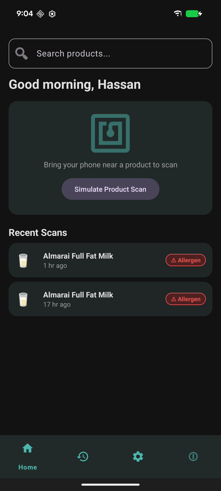
Key Features Summary¶
| Feature | Technology | Benefit |
|---|---|---|
| NFC Scanning | Android Foreground Dispatch | Touch-based, works in any lighting |
| AI Recommendations | Groq (llama-3.3-70b) | Free, fast, safety-verified |
| Text-to-Speech | Edge TTS + Android fallback | Neural-quality Arabic & English voices |
| Offline Support | Room DB + SharedPreferences cache | Core features work without internet |
| Bilingual | Arabic & English | RTL layout, tashkeel for accurate TTS |
| Accessibility | Auto-TTS, font scaling, high contrast | Designed for visually impaired users |
| Interactive Tutorials | Custom SpotlightOverlayView | Guides new users through every screen |
Technology Stack¶
Frontend: Android (Java) + Material Design 3
Architecture: MVVM + Repository + LiveData
Database: Room (SQLite) with pre-seeded products
AI Engine: Groq API (llama-3.3-70b-versatile)
TTS: Microsoft Edge TTS (neural) + Android TTS (fallback)
NFC: Android NFC Foreground Dispatch (UID-based lookup)
Docs: MkDocs Material (this site)